A round of the interactive companion game opens in a new tab and warms up your memory before the deep dive begins.
Priceless English: Love, Luxury, and Larceny on the Côte d'Azur — a Film Lesson That Pays for Itself
A guided journey through a Gemini Notebook lookbook for Pierre Salvadori's Hors de prix (2006), where Audrey Tautou and Gad Elmaleh turn a luxury scam on the French Riviera into an unforgettable English lesson.
The arithmetic of cinema rarely behaves like poetry, yet the numbers behind Priceless tell a story of their own. The film operated on a budget of €11.7 million and went on to gross $28 million worldwide, a detail the lesson material files under the heading "The Base Spirit." Five years after Amélie made Audrey Tautou the most luminous innocent in French cinema, she signed on to play a calculating gold-digger who drains wealthy men for a living. The gamble paid off handsomely, and the character of Irène Mercier has been quietly seducing film students and language learners ever since.
This article walks through a twelve-panel retrospective lookbook created with Gemini Notebook — a study companion that reframes Pierre Salvadori's 2006 comedy Hors de prix as, in its own words, "a cinematic masterclass in seduction." The material doubles as an unusually rich English lesson, because its pages are crowded with expressions that rarely appear in textbooks: gold-diggers, marks, facades, kept men, and practitioners of amoral hedonism. Along the way the story gets unpacked, the key vocabulary gets dissected, the metaphors get decoded, and an interactive quiz waits near the end. Every panel from the lookbook appears here in its original form, so this page and the PDF work as one continuous lesson.
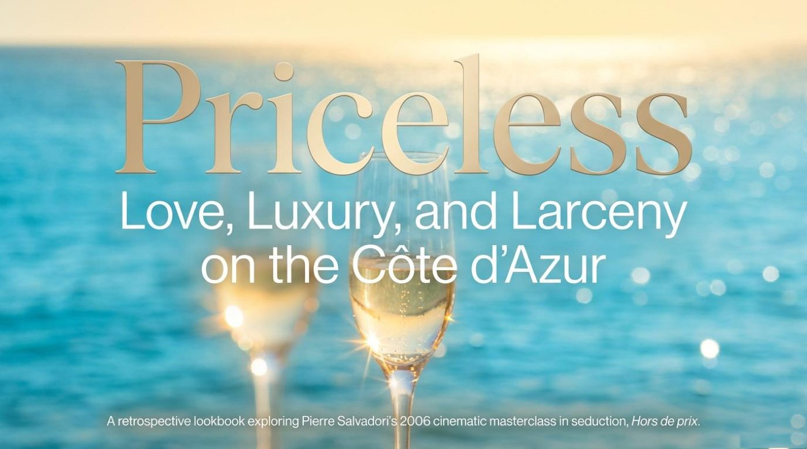
Part One · Content and Context
📚 The Story Behind the Lesson
A Cocktail of Love and Larceny
The lookbook treats the film the way a bartender treats a drink, and it says so on its second panel, which is titled "A Cocktail of Love and Larceny." Under the heading "The Base Spirit," it records the essentials: "A 2006 French romantic comedy directed by Pierre Salvadori and co-written with Benoît Graffin, operating on a budget of €11.7 million and grossing $28 million worldwide." Under "The Flavor Profile," it distills the plot into one elegant sentence: "A tale where the amoral hedonism of youth trades itself for the lonely wealth of older patrons, exploring whether true romance can be bought or sold." And under "The Classic Garnish," it names the film's ancestors: "Direct thematic homages to 1930s Hollywood gold-digger movies and Blake Edwards' 1961 classic Breakfast at Tiffany's, with the screwball elegance of Charade."
Pay attention to the word homage here, because it is a useful critic's word. An homage is a deliberate nod from one work of art to an earlier one, and the panel stacks three of them: the gold-digger comedies of the 1930s, Breakfast at Tiffany's, and the stylish caper Charade. The word screwball belongs to the same family — it names a classic Hollywood style of fast, witty, slightly absurd romantic comedy. The panel then seals the section with the sentence that frames everything else in this article: "Far from a standard romance, Priceless is a sly, bittersweet exploration of materialism. It is a story where deceit is the currency, luxury is the trap, and love is the ultimate act of financial ruin."
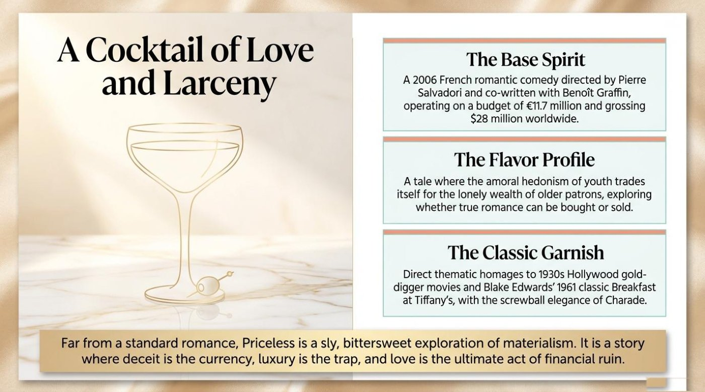
The Muse and the Mark
Every con story needs two figures, and the lookbook introduces them in a pair of character panels. The first is titled "The Muse: Irène Mercier," and it opens with a blunt definition under the heading "The Facade": "A glamorous gold-digger who uses haute couture and calculated charm to convince wealthy older men to fund her lavish lifestyle in exchange for companionship and sex." The panel then explains what the role meant for the actress under "The Departure": "A sharp, subversive departure from Audrey Tautou's luminous, innocent Amélie persona, masking deep vulnerability with unyielding materialism." Her weakness gets its own heading, "The Fatal Flaw": "She fails to realize she is steadily outfoxing herself, becoming the one who is ultimately smitten by the very game she plays." The material credits her simply: "Key Casting: Played by Audrey Tautou."
Notice the reflexive verb pattern in outfoxing herself. To outfox someone means to outsmart them, and adding oneself turns the trick inward — Irène is so busy cheating others that she cheats her own heart. The adjective smitten completes the irony: it literally means struck or hit hard, and English keeps that old sense of love as a blow you never saw coming.
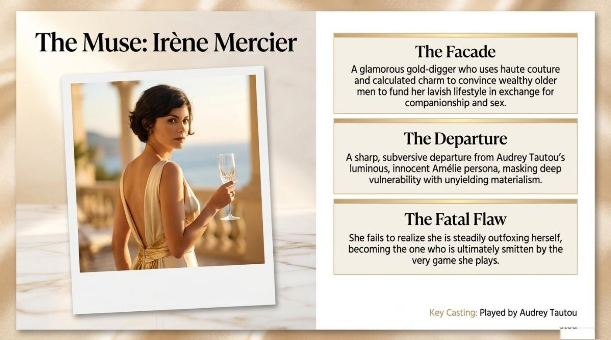
The companion panel is titled "The Mark: Jean Simon," and the word mark is pure swindler slang — the chosen victim of a con. The panel sketches Jean in three beats. "The Reality": "A mild-mannered, timid waiter and bartender at a luxury hotel in Biarritz who possesses an intoxicating infatuation." "The Persona": "Mistaken for a millionaire guest, he adopts the role to secure Irène's affection, setting a ruinous plot in motion." And "The Execution": "Anchored by Gad Elmaleh's Buster Keaton-esque deadpan charm, Jean transforms from a clumsy amateur into a master of the dark business of fake love and real money." The casting line reads: "Key Casting: Played by Gad Elmaleh."
Here the material offers a miniature film-history lesson. Deadpan joins dead and pan, old American slang for the face, and describes comedy delivered without a flicker of expression. Buster Keaton was silent cinema's stone-faced genius, so calling Elmaleh "Buster Keaton-esque" places a modern French comedian inside a hundred-year-old tradition. A concrete example from the lesson material makes the dynamic vivid: the timid bartender never plans to become a swindler — an accident of mistaken identity hands him the role of a lifetime, and an infatuation does the rest.
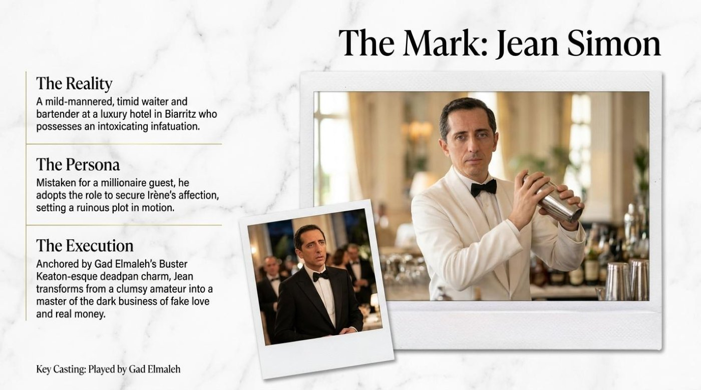
The Night That Costs a Year
The middle panel of the story works like a two-photo diptych titled "The Cost of a Drink: The Imperial Suite." The left half, "The Night," sets the scene: "Irène, abandoned on her birthday by her wealthy lover, wanders into the hotel bar. She mistakes Jean for a millionaire. Jean leans into the deceit, crafting impressive cocktails. They drunkenly retire to the opulent Imperial Suite." The right half, "The Morning," delivers the hangover: "The illusion shatters. Jean wakes up alone. Irène has vanished, leaving Jean with an intoxicating memory and a year-long obsession that will ultimately dictate his financial and emotional ruin."
The panel's closing band carries the thesis of the whole film: "The deceit that Irène relies on to secure her future is mirrored and weaponized by a bartender, wrecking her carefully laid plans." Look closely at the verbs. The deceit is mirrored — the trick returns like a reflection — and weaponized, a modern word meaning turned into a weapon. The phrase carefully laid plans is a classic collocation worth stealing: plans are laid, and the best of them get wrecked. A real moment from the material illustrates the idea perfectly: Jean's single evening of leaning into the lie, one improvised evening of impressive cocktails, costs him a full year of chasing an illusion.
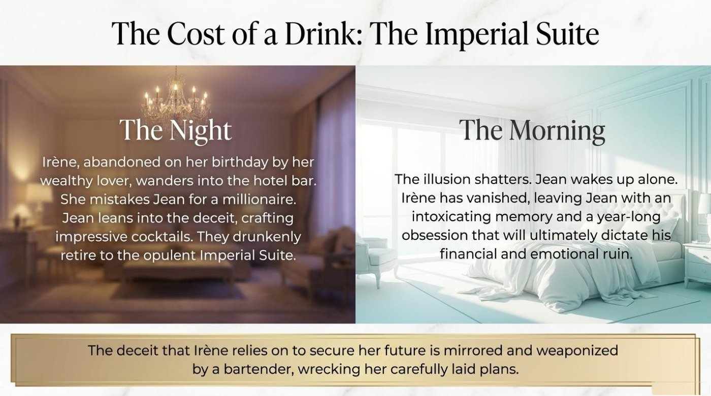
The Playground: From Biarritz to Monte-Carlo
The lookbook then hands the story a map, under the title "The Playground: From Biarritz to Monte-Carlo." Biarritz gets the label of a race: "The starting line. A luxury seaside hotel where the initial mistaken identity and drunken affair occur." The Côte d'Azur between Nice and Monaco gets the label of a hunt: "The hunting grounds. The opulent Hôtel de Paris in Monte-Carlo serves as the backdrop for the high-stakes game of seduction." Notice the vocabulary of sport and war — a starting line, hunting grounds, and a high-stakes game. The setting itself receives the panel's most quotable sentence, under the heading "The Environment as a Character": "Endless azure seas, golden sunlight glinting off terraces, and sleek sports cars winding along coastal roads. The ecosystem is defined by an intoxicating perfume of wealth, where luxury tourism creates a backdrop of amoral hedonism."
The phrase "The Environment as a Character" names a real technique of film analysis. A setting acts as a character when it shapes the choices of the people inside it, and this ecosystem — an ecology word the panel borrows for society — pushes everyone toward money. The backdrop does more than decorate; it applies pressure. A concrete example from the lesson material shows the mechanism: nobody in this world orders a simple coffee, because every bar, suite, and terrace in the film is a stage where wealth is performed and audited.
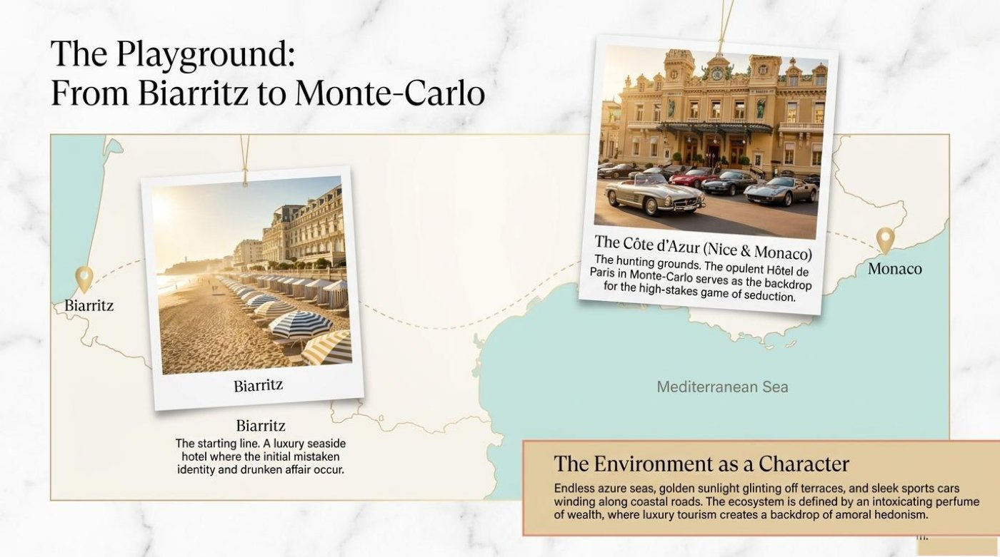
The Reversal: The Economy of Infatuation
Here the material turns the tables on its hero, in a panel titled "The Reversal: The Economy of Infatuation." The hunter becomes the hunted, and the panel counts the cost in four numbered stages. "1. The Pursuit": "Jean follows Irène to the Côte d'Azur after she discovers his true identity and abandons him." "2. The Ruin": "He spends all the money to his name — draining his savings and pension plan — simply to pay for her company." "3. The Final Euro": "Destitute, Jean spends his very last €1 coin to buy '10 more seconds' of looking into Irène's eyes." And "4. The Kept Man": "Left with an unpaid hotel bill, Jean is rescued by Madeleine, an aging, wealthy widow who pays his debts in exchange for his companionship. The waiter becomes the luxury companion."
The adjective destitute marks the bottom of the staircase — it means having absolutely nothing. The phrase kept man names the role he accepts at the top of the descent: a man financially maintained by a wealthy lover, the mirror image of a kept woman. The panel's final line deserves framing, because it compresses the entire film into six words: "The waiter becomes the luxury companion." The symmetry is exact — the man who once served drinks to the rich now stands among the served.
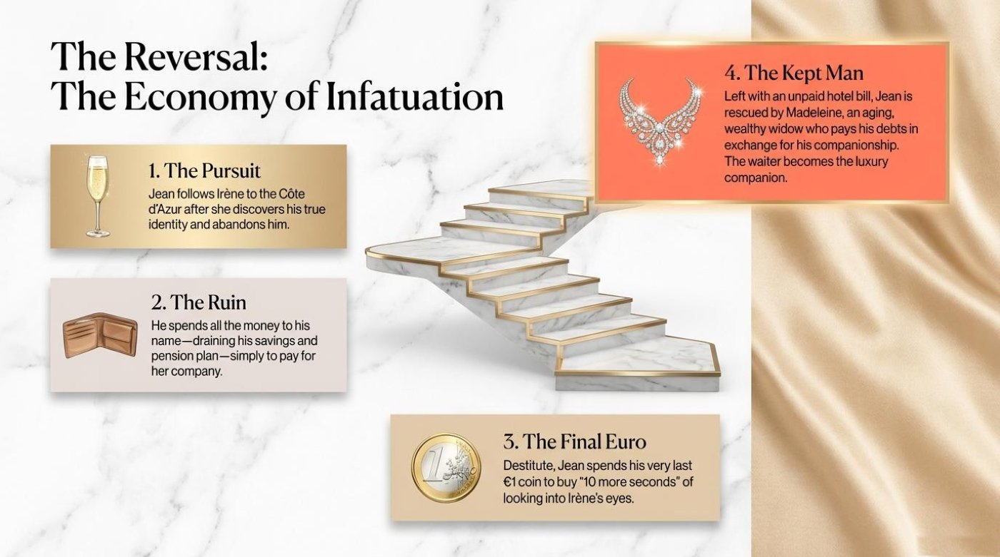
The Masterclass in Seduction: Master versus Apprentice
The lookbook stages its most structured panel as a duel, titled "The Masterclass in Seduction," and it compares the two characters across four rows. For Irène (The Master), the material lists: "The Strategy: Calculated companionship, withholding affection to extract luxury." Then: "The Currency: Youth and sex traded for financial security." Then: "The Trophies: Designer evening gowns and a lavish lifestyle." And finally: "The Secret Weapon: The threat of walking away." For Jean (The Apprentice), the parallel list runs: "The Strategy: Amateur clumsiness masking genuine attentiveness; adopting Irène's shared tricks." Then: "The Currency: Emotional availability traded for hotel bills and high-end accessories." Then: "The Trophies: A €30,000 watch (earned after Madeleine forces him to get plastic surgery on his ear)." And finally: "The Secret Weapon: The '10 more seconds' stare — a technique Irène eventually adopts and offers back to him."
The grammar of the panel is as instructive as its content, because every row uses the same pattern: a category, a colon, and a trade. Currency, trophies, withholding, extracting — the seduction is written entirely in the language of commerce. The last row holds the film's tenderest idea: the stare that once bought ten seconds of Irène's attention becomes a technique she learns from Jean and offers back to him. A concrete example from the material seals the parallel: the €30,000 watch Jean wins comes bundled with an ear operation demanded by his patron, which is the masterclass teaching its most cynical lesson about trophies.
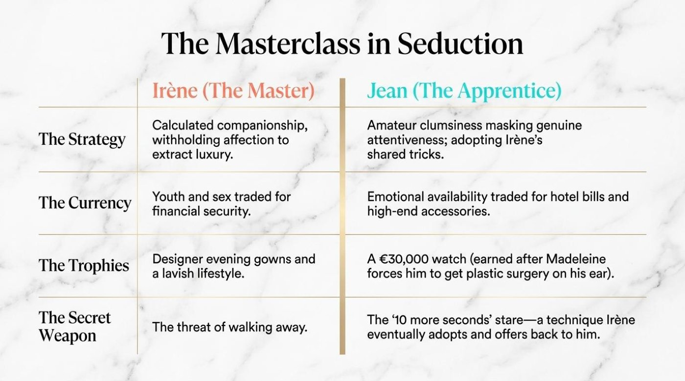
The Patrons and the Critics
Beneath the two leads, the material arranges a supporting gallery under the title "The Patrons: An Ecosystem of Lonely Wealth." The first portrait belongs to Jacques: "Played by Vernon Dobtcheff. The elderly lover whose drunken slumber on Irène's birthday opens the door for Jean. He represents the golden grail of marriage that Irène desperately chases to secure her pension." The phrase golden grail bends the legend of the Holy Grail — the impossible sacred prize — into an ironic financial goal. The second portrait belongs to Madeleine: "Played by Marie-Christine Adam. The wealthy widow who saves Jean from financial ruin. She requires obedience (forcing Jean's plastic surgery) but is appeased by the illusion of affection, such as when Jean pawns his watch to buy her diamond earrings." The verb appeased means calmed through gifts or concessions, and pawns means exchanges a possession for quick cash — both words are worth adding to your money vocabulary. The panel closes with its synthesis: "The protagonists must navigate an orbit of aged, lonely wealth and youthful hangers-on, where money buys control but cannot recapture youth." The noun hangers-on names the satellites who orbit rich people for a living.
The critics then step in, in a panel titled "The Subversion: A Harsh Reality in a Pretty Package." Its centerpiece is a long quotation from Mick LaSalle of the San Francisco Chronicle: "Through this seduction, Priceless turns the viewer into a harlot, too... So Priceless is silly, but it's not so silly. It's pretty to look at, often very funny, but it corrupts its audience as it corrupts its characters." Study the construction it corrupts its audience as it corrupts its characters — the repetition with as is a classic rhetorical device called antithesis, and it lets a critic accuse a film of a sin while praising its craft. The panel adds the counterweight in "The Tone": "As Stephen Holden noted, the film is an 'amusing ball of fluff' that winks at the vanity of wealthy voluptuaries, never explicitly judging the amoral high jinks of its characters." The phrase winks at means pretends not to see while silently acknowledging, a high jinks is wild mischief, and a voluptuary is a person devoted to luxury and sensual pleasure — three prizes for any film reviewer's vocabulary.
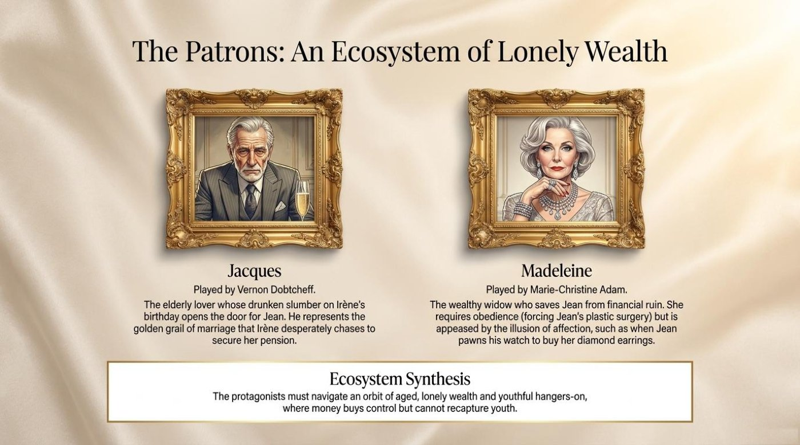
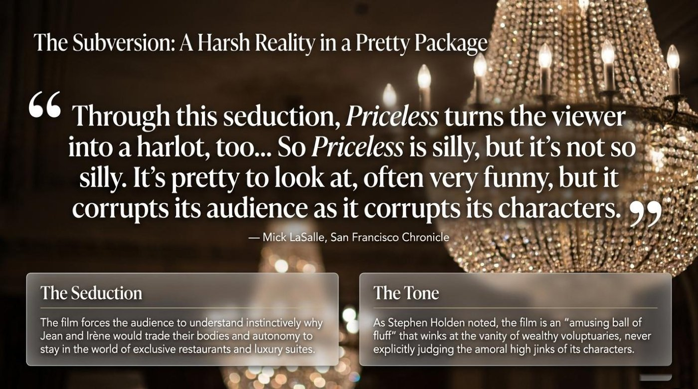
The Climax and the Check
The plot accelerates in a panel titled "The Climax: Turning the Tables" — and turning the tables is the exact idiom for reversing who plays whom. "1. The Setup": "At an exclusive party, Irène spots Jacques with a new, young girlfriend, Agnès. Irène hatches a plan to win Jacques back and enlists Jean." To hatch a plan is to devise one in secret, and to enlist someone is to recruit them into your scheme. "2. The Sting": "Jean flawlessly plays the role of a wealthy prince, successfully seducing Agnès away from Jacques. Jean is dumped by Madeleine in the process, but clears the path for Irène." A sting is a carefully engineered swindle, staged like a theater piece. "3. The Realization": "Standing on the balcony, Irène watches Jean with Agnès. The jealousy shatters her facade. She realizes she is deeply in love with Jean, rendering her pursuit of a luxurious lifestyle meaningless." The lesson material ends the sequence with its most surgical sentence: the trick she taught him exposes the feeling she denied.
The final panel is titled "The Check: A Love That is Priceless," and the word check carries a double meaning — the restaurant bill and the final reckoning. "The Escape": "A barefoot Irène abandons her designer gowns and wealthy suitors to ride off to Italy on the back of Jean's scooter." "The Final Transaction": "They use Jean's final €1 coin — the same coin that once bought '10 more seconds' of eye contact — to pay the highway toll fee." And "The Takeaway": "True love is the one thing that cannot be priced. Salvadori's masterpiece ultimately suggests that sometimes, giving up everything you thought you wanted is the only way to gain what truly matters." A concrete example from the material shows why the coin matters so much: the smallest piece of money in the story appears twice, first at the depth of desperation and then at the moment of freedom, and the film asks the audience to feel the difference.
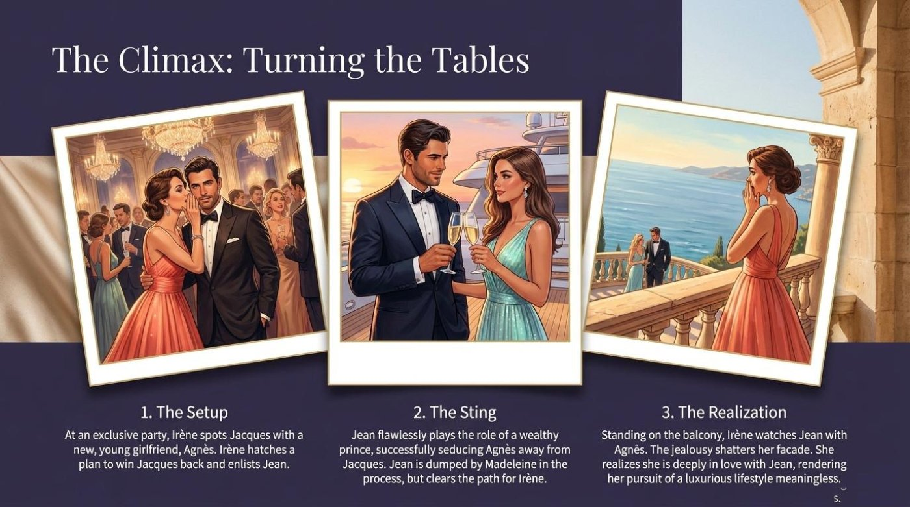
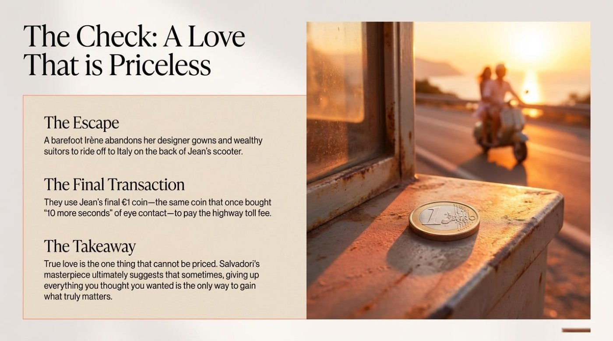
Part Two · Vocabulary and Language Takeaways
💡 The Gold-Digger Economy: Words That Trade in Desire
The lexicon of this material tells the film's story on its own: a gold-digger hunts a mark behind a facade, gets smitten by her own game, and turns her apprentice into a kept man before love crashes the transaction. Each entry below follows the same routine — the literal meaning, the contextual meaning, the example straight from the material, and the way the material itself explains the word. Read the entries first, then rehearse everything with the flip-card deck at the end of the section.
gold-digger noun
Literal meaning · In its oldest sense, a person who digs for gold; the compound later named mining tools as well.
Figurative meaning · A person who enters romantic relationships with wealthy partners mainly to extract money, gifts, and a luxurious lifestyle.
Example from the material · "A glamorous gold-digger who uses haute couture and calculated charm to convince wealthy older men to fund her lavish lifestyle in exchange for companionship and sex." The definition works through behavior rather than insult, and that precision is the entry's real lesson.
How the material explains it · The lookbook files this sentence under the heading "The Facade," which turns the word into a lesson about surfaces: the charm is couture-thin, and the fund-seeking motive sits underneath it.
larceny noun
Literal meaning · A formal legal word for the theft of personal property, carried into English from Old French larcin.
Figurative meaning · Here, the playful crime at the heart of the plot — stolen identities, borrowed roles, and a hotel bill that never gets paid.
Example from the material · "Love, Luxury, and Larceny on the Côte d'Azur." The main title pairs a felony with two pleasures, and the collision is the joke.
How the material explains it · By placing larceny between love and luxury in one breath, the material teaches register through rhythm: the alliteration makes a crime word sound like champagne.
the mark noun phrase · con artists' slang
Literal meaning · A target — the object an archer aims at, or the object a swindler sets in his sights.
Figurative meaning · In the underworld dictionary, the chosen victim around whom a con is designed.
Example from the material · "The Mark: Jean Simon" names the panel for the man who was "Mistaken for a millionaire guest" and who "adopts the role to secure Irène's affection, setting a ruinous plot in motion."
How the material explains it · The lookbook promotes the supposed victim into the protagonist and then lets him graduate — its third card calls Jean "a master of the dark business of fake love and real money." The word mark therefore marks a starting point, not a destiny.
facade noun
Literal meaning · The front face of a building, from French façade and Italian facciata, ultimately from Latin facies, "face."
Figurative meaning · The public mask a person maintains to hide real motives or feelings.
Example from the material · "The jealousy shatters her facade." One verb carries the whole emotional turn of the climax.
How the material explains it · The lookbook uses "The Facade" as the heading for Irène's entire character definition, then breaks that facade with the verb shatters. English treats facades like glass: they glitter, and they break into pieces.
smitten adjective
Literal meaning · The past participle of smite — to strike or hit hard; in older English, "afflicted."
Figurative meaning · Suddenly and overwhelmingly in love, usually against one's own plans.
Example from the material · "She fails to realize she is steadily outfoxing herself, becoming the one who is ultimately smitten by the very game she plays."
How the material explains it · The passive voice carries the irony: Irène is not doing the hitting — she is getting hit, by her own scheme. Remember that English keeps the old violence inside this romantic word.
deadpan adjective · adverb
Literal meaning · Dead plus pan, old American slang for the face: an unmoving, expressionless face.
Figurative meaning · Humor delivered with a flat face and voice, so the gap between absurd events and the calm reaction creates the laugh.
Example from the material · "Anchored by Gad Elmaleh's Buster Keaton-esque deadpan charm, Jean transforms from a clumsy amateur into a master of the dark business of fake love and real money."
How the material explains it · The lookbook reaches for Buster Keaton, silent cinema's stone-faced genius, and lets the compound Keaton-esque place a modern French comedian inside a hundred-year-old comic tradition.
kept man noun phrase
Literal meaning · Kept in the sense of maintained and supported — paid for, the way an apartment is paid for.
Figurative meaning · A man financially supported by an older, wealthy lover in exchange for companionship; the mirror image of a kept woman.
Example from the material · "Left with an unpaid hotel bill, Jean is rescued by Madeleine, an aging, wealthy widow who pays his debts in exchange for his companionship. The waiter becomes the luxury companion."
How the material explains it · The panel's final line compresses the film's whole reversal into six words, and the gender-flipped phrase names the role: the server of the rich joins the served.
amoral hedonism adjective + noun
Literal meaning · Hedonism comes from the Greek hēdonē, "pleasure" — the pursuit of pleasure as the highest good. The prefix a- means "without," so amoral describes something outside moral judgment rather than against it.
Figurative meaning · A lifestyle of champagne, suites, and sunsets that never pauses to ask whether an action is right or wrong.
Example from the material · "A tale where the amoral hedonism of youth trades itself for the lonely wealth of older patrons, exploring whether true romance can be bought or sold."
How the material explains it · The phrase returns in the environment panel — "a backdrop of amoral hedonism" — which proves the material treats it as the air the characters breathe rather than a sin they commit.
More Pearls From the Panels
The material keeps giving beyond the headliners, and each of the following rewards a second look:
- to outfox — to outsmart someone; with oneself, to defeat your own interests.
- to turn the tables — to reverse the positions of hunter and hunted.
- a sting — a carefully engineered swindle, staged like a performance.
- hangers-on — people who attach themselves to the rich for advantage.
- the golden grail — a twisted Holy Grail: the glittering prize everyone chases.
- high jinks — lively, reckless fun.
- a voluptuary — a person devoted to luxury and sensual pleasure.
- to wink at — to pretend not to notice while silently acknowledging.
- sly · bittersweet · opulent · lavish · destitute — five adjectives that describe the film's full emotional range, from cunning to ruined to rich.
- to hatch a plan · to enlist · to pawn · to withhold — four verbs of scheming that turn any plot summary professional.
The Flip-Card Deck: Eight Terms to Keep
The deck below condenses the eight headliner terms into a practice set. Click or tap a card to turn it over, and press Enter or Space while a card is focused. The back of each card carries the literal meaning, the meaning inside this story, the example from the material, and a note on why the word matters. The button under the deck turns the whole set at once.
The deck mirrors the film's central transaction. Every card costs one click, every flip repays the cost with meaning, and the eight terms together form a complete kit for describing ambition, charm, and consequences in English. The vocabulary section of the PDF holds the same terms in their original setting, so the deck and the document train the same memory from two directions.
Part Three · Deeper Meaning
✨ Metaphors and Symbols: Reading the Film's Currency
The lookbook thinks in images, and four of those images carry the film's deepest meaning. Each one starts as a piece of visual design on a panel and grows into an idea about money, love, and language.
1. The Cocktail
The material builds its entire review around a bar metaphor: "A Cocktail of Love and Larceny," with a "Base Spirit," a "Flavor Profile," and a "Classic Garnish." The structure is more than cute naming — it argues that the film is a carefully mixed drink, where the spirit is the 2006 French production itself, the flavor is the trade between youthful hedonism and lonely wealth, and the garnish is the legacy of Breakfast at Tiffany's and Charade. The metaphor teaches genre literacy: a viewer who tastes each ingredient separately understands why the film feels simultaneously romantic, criminal, and elegant. The closing sentence mixes the drink's aftertaste: "Far from a standard romance, Priceless is a sly, bittersweet exploration of materialism."
2. Deceit as Currency
The lookbook's boldest sentence runs a full economic system through three nouns: "It is a story where deceit is the currency, luxury is the trap, and love is the ultimate act of financial ruin." Once the metaphor is planted, every panel spends it. The comparison panel lists each character's "Currency" and "Trophies"; the reversal panel calls the plot "The Economy of Infatuation"; the final panel names its ending "The Final Transaction." The significance is precise: in this world, seduction is a market, affection is capital, and sincerity is the only coin nobody accepts — until the last scene proves otherwise. For a language learner, the panel doubles as a grammar of collocation, showing which verbs naturally attach to money words: extract, trade, drain, spend, pawn, pay.
3. The One-Euro Coin
The smallest object in the story carries its heaviest symbolism, and the material tracks it across two panels. At the bottom of Jean's ruin: "Destitute, Jean spends his very last €1 coin to buy '10 more seconds' of looking into Irène's eyes." At the moment of escape: "They use Jean's final €1 coin — the same coin that once bought '10 more seconds' of eye contact — to pay the highway toll fee." The coin measures the distance between the two scenes: the same denomination buys desperation at first and freedom at last. The device is called a callback, and the material's takeaway sentence explains what the callback means: "True love is the one thing that cannot be priced." A coin, by definition, always has a price — so the object that returns at the end quietly announces that the characters have finally left the marketplace.
4. Golden Frames Around Lonely Wealth
The patrons panel is designed like a museum wall: Jacques and Madeleine hang inside ornate gilded frames, and the panel titles their world "An Ecosystem of Lonely Wealth." The visual joke is gentle but pointed — the rich are displayed like portraits, valuable and immovable. The panel's own synthesis completes the reading: "The protagonists must navigate an orbit of aged, lonely wealth and youthful hangers-on, where money buys control but cannot recapture youth." The frame is therefore a golden cage in still life: it preserves the patrons the way glass preserves an exhibit, and it holds them at exactly the distance the young machinery of charm needs to operate. For the viewer, the image explains the film's melancholy without a single sad scene.
Part Four · Comprehension Check
🎯 The Quiz: Prove the Panels Paid Off
The quiz below draws its eight questions straight from the material — comprehension, vocabulary in context, true-or-false items, and a fill-in-the-blank challenge. Every click returns instant feedback, the score bar tracks the running total, and the row of dots records the road through the deck. Treat a wrong answer as a signpost rather than a setback, because every explanation points back to the idea behind it.
FINAL SCORE
Conclusion
🌅 The Takeaway That Cannot Be Priced
The material saves its most quotable line for its final panel: "True love is the one thing that cannot be priced. Salvadori's masterpiece ultimately suggests that sometimes, giving up everything you thought you wanted is the only way to gain what truly matters." It is a fitting last sentence for a film about people who price everything, and it doubles as the quiet moral of the lookbook itself.
Language learners receive the same lesson in a different currency. True fluency, like the love in the film, is the one thing that cannot be bought outright — it accumulates through small, honest, repeated exchanges of attention. Remember that the €1 coin paid twice: once for ten seconds of someone else's eyes, and once for the open road. Spend your own small coins on this material the same way. Watch Hors de prix with English subtitles this week, borrow one phrase from the flip-card deck for a real conversation, replay the quiz until every dot turns green, play the companion game until the vocabulary feels like reflex, and return to the PDF whenever the words begin to fade. The language of love, luxury, and larceny rewards everyone who practices a little of it every day.
📎 Lesson Files
The complete lookbook travels with this article and sits in the same folder as this page. Open it in a new tab to keep the original panels at hand while you practice.